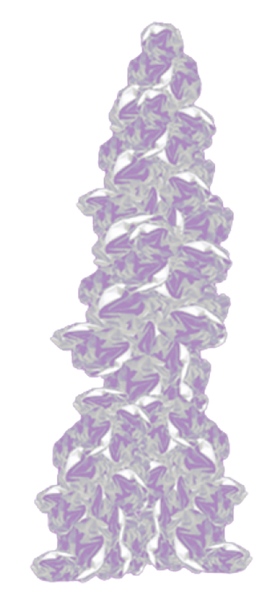

GAME OVER — 「선택 불능(은둔)」 상태에 도달했습니다.
당신은 결코 처음부터 게으른 것이 아니었습니다.
은둔형 외토리(히키코모리) 문제는 단순히 개인의 게으름이나 의지의 문제가 아닙니다. 실제로 정신건강의학과를 방문하여 진단을 받은 은둔형 외토리 당사자의 약 80% 이상이 어떠한 형태로든 정신질환(정신건강상의 문제)을 겪고 있는 것으로 나타났습니다.
즉, 은둔 상태는 마음의 병이나 뇌 기능을 불균형, 혹은 치열한 사회적 스트레스로부터 스스로를 보호하기 위한 '신호'일 수 있습니다. 그렇다면 은둔형 외토리 당사자들에게서 주로 나타나는 대표적인 정신질환에는 어떤 것들이 있는지, 전체의 80% 이상을 차지하는 주요 진단명과 그 원인을 하나씩 살펴보겠습니다.

적응장애, 공황장애, 강박장애, 사회불안장애(대인공포증), 범불안장애, PTSD(외상후 스트레스 장애) 등.
학교나 직장에서의 인간관계 갈등, 업무 스트레스, 급격한 환경 변화 등 일상생활에서의 강한 스트레스나 트라우마가 계기가 됩니다.
"다시 공황발작이 오면 어쩌지", "사람들이 나를 어떻게 볼까(사회불안)"와 같은 강한 불안과 공포감으로부터 스스로를 보호하기 위해 외출과 사회 참여를 피하게 되며, 결과적으로 은둔으로 이어지는 경우가 많습니다.
조현병, 망상장애 등.
병 및 은둔으로 이어지는 요인:
뇌 기능 및 정보 처리 능력의 균형이 깨지면서 "나를 욕하는 것 같다", "감시당하고 있다"와 같은 환각이나 망상이 나타나거나, 의욕이 떨어지고 아무것도 하기 싫어지는 증상(음성증상)이 발생합니다.
현실에 적응하거나 타인과 소통하는 것이 매우 어려워지기 때문에, 타인의 시선을 피해 집에 머물 수밖에 없는 상태에 빠지기 쉽습니다.
자폐스펙트럼장애(ASD), 주의력결핍 과잉행동장애(ADHD), 학습장애(LD) 등의 발달장애.
병 및 은둔으로 이어지는 요인:
타고난 뇌의 특성으로 인해 "눈치껏 분위기를 파악하는 것이 어렵다", "의사소통에서 오해를 자주 산다", "건망증이나 실수가 많다"와 같은 어려움을 겪기 쉽습니다.
그 결과 학교나 직장에서 실패 경험과 고립이 쌓이게 되고, 심신이 지친 끝에 이차적 장애(우울증 등)가 발생하여 은둔으로 이어지는 경우가 많습니다.